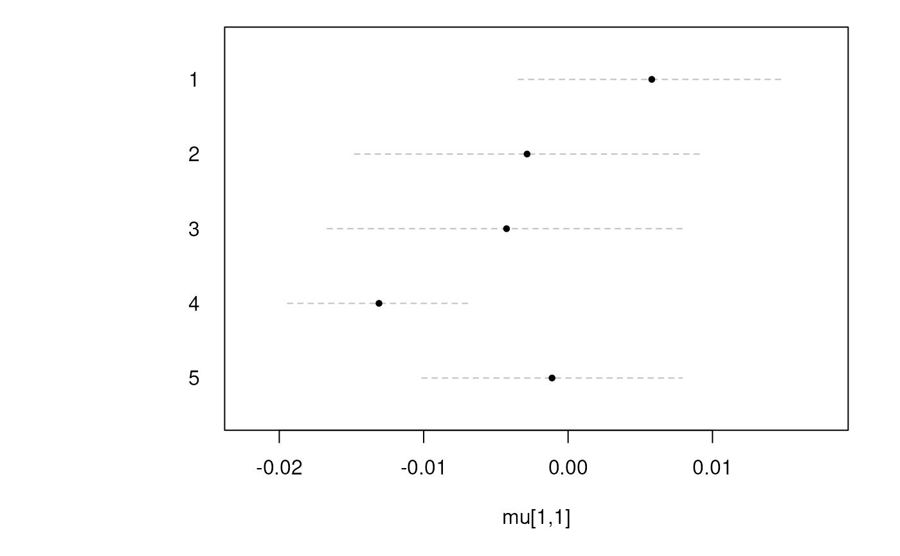
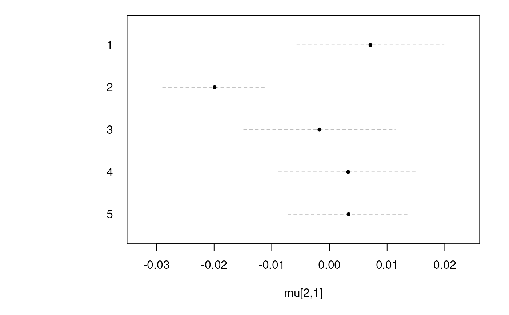
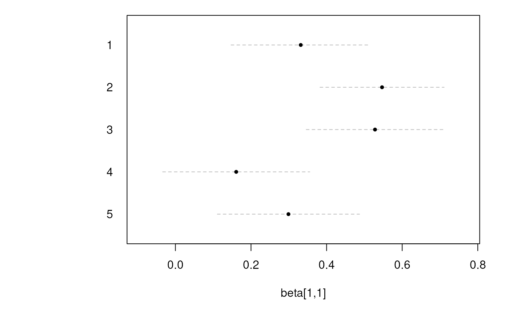
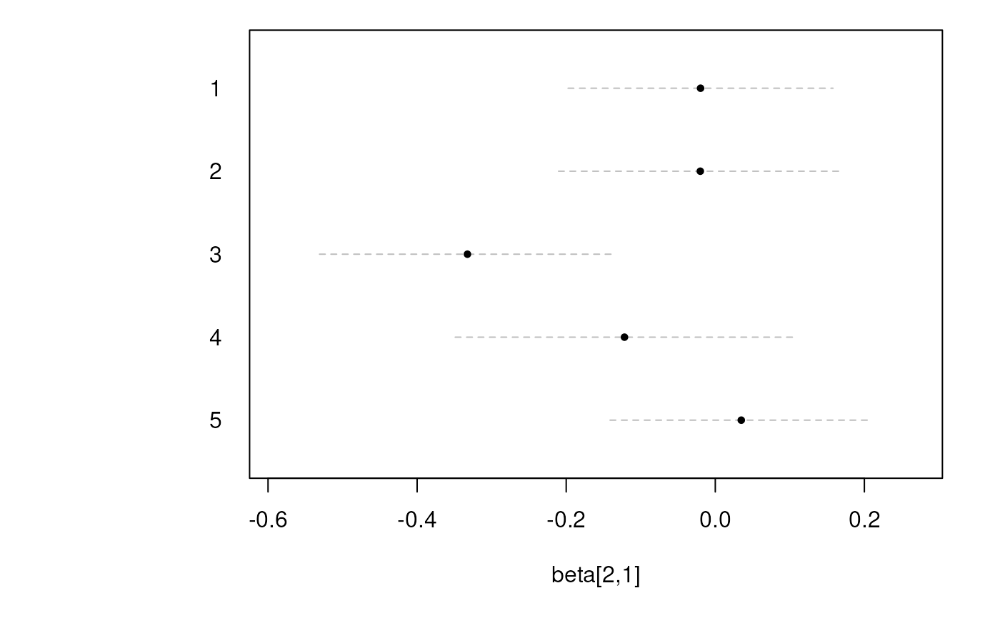
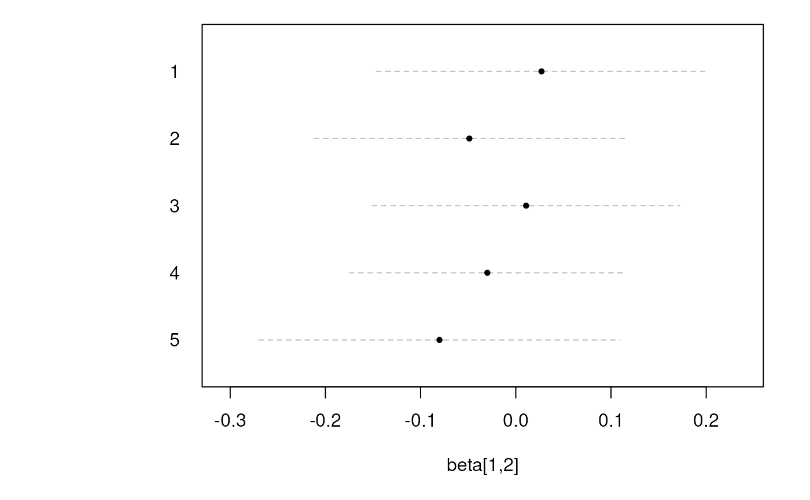
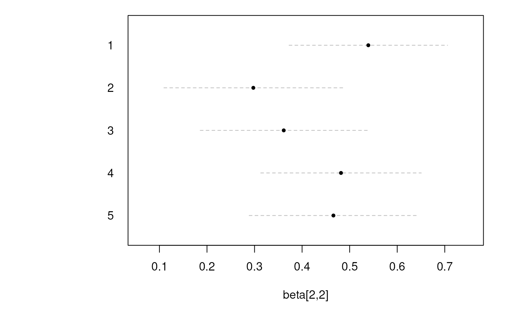
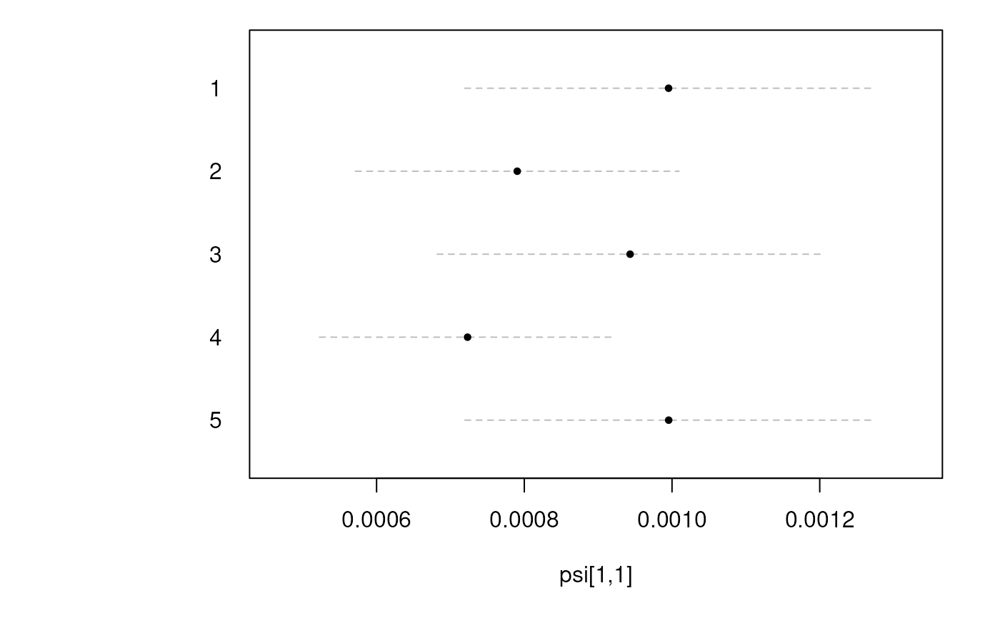
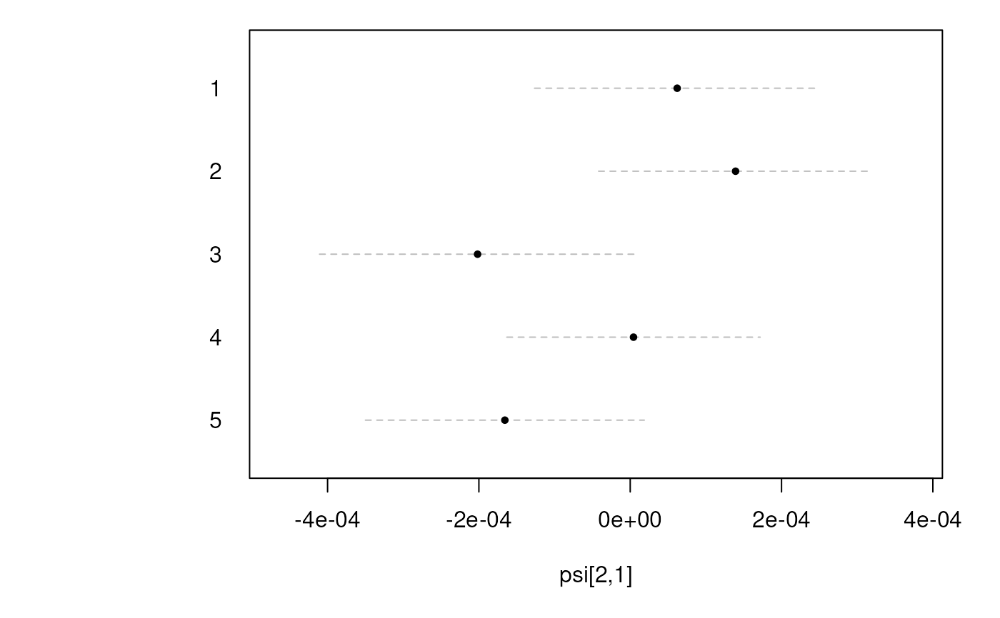
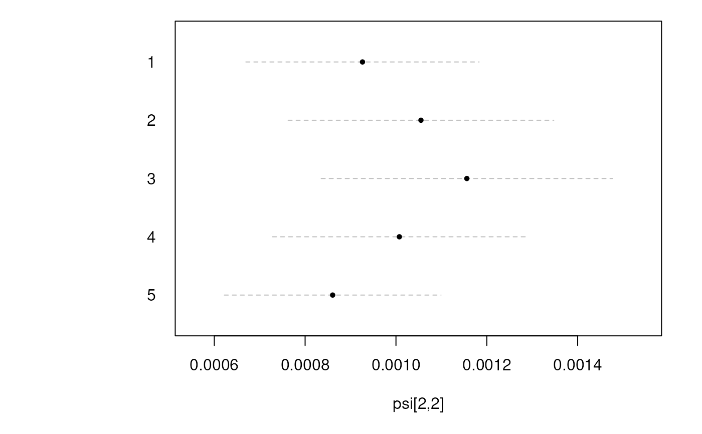

Fit First-Order Vector Autoregressive Models by ID and Save Results
Source:R/fitVARMxID-fit-dt-var-mx-id-save.R
FitVARMxIDSave.RdFits a first-order vector autoregressive model separately for each unit ID
and saves each individual fitted model object to an .Rds file.
This function fits the same individual-level models as FitVARMxID(), but
saves each individual fit to disk. For each unique value of id, the model
is fit using the corresponding subset of data. The fitted object for that
ID is saved to path with file name prefix_id.Rds, where id is replaced
by the unit ID value.
The value added by FitVARMxIDSave() is that the individual fits are
persisted to disk while the function still returns a collated object of
class varmxid, similar to the object returned by FitVARMxID().
Usage
FitVARMxIDSave(
data,
observed,
id,
time = NULL,
ct = FALSE,
center = TRUE,
path = getwd(),
prefix = "fitvarmx",
overwrite = TRUE,
mu_fixed = FALSE,
mu_free = NULL,
mu_values = NULL,
mu_lbound = NULL,
mu_ubound = NULL,
alpha_fixed = FALSE,
alpha_free = NULL,
alpha_values = NULL,
alpha_lbound = NULL,
alpha_ubound = NULL,
beta_fixed = FALSE,
beta_free = NULL,
beta_values = NULL,
beta_lbound = NULL,
beta_ubound = NULL,
psi_diag = FALSE,
psi_fixed = FALSE,
psi_d_free = NULL,
psi_d_values = NULL,
psi_d_lbound = NULL,
psi_d_ubound = NULL,
psi_d_equal = FALSE,
psi_l_free = NULL,
psi_l_values = NULL,
psi_l_lbound = NULL,
psi_l_ubound = NULL,
nu_fixed = TRUE,
nu_free = NULL,
nu_values = NULL,
nu_lbound = NULL,
nu_ubound = NULL,
theta_diag = TRUE,
theta_fixed = TRUE,
theta_d_free = NULL,
theta_d_values = NULL,
theta_d_lbound = NULL,
theta_d_ubound = NULL,
theta_d_equal = FALSE,
theta_l_free = NULL,
theta_l_values = NULL,
theta_l_lbound = NULL,
theta_l_ubound = NULL,
mu0_fixed = TRUE,
mu0_func = TRUE,
mu0_free = NULL,
mu0_values = NULL,
mu0_lbound = NULL,
mu0_ubound = NULL,
sigma0_fixed = TRUE,
sigma0_func = TRUE,
sigma0_diag = FALSE,
sigma0_d_free = NULL,
sigma0_d_values = NULL,
sigma0_d_lbound = NULL,
sigma0_d_ubound = NULL,
sigma0_d_equal = FALSE,
sigma0_l_free = NULL,
sigma0_l_values = NULL,
sigma0_l_lbound = NULL,
sigma0_l_ubound = NULL,
robust = FALSE,
seed = NULL,
tries_explore = 100,
tries_local = 100,
max_attempts = 10,
silent = FALSE,
ncores = NULL
)Arguments
- data
Data frame. A data frame object of data for potentially multiple subjects that contain a column of subject ID numbers (i.e., an ID variable), and at least one column of observed values.
- observed
Character vector. A vector of character strings of the names of the observed variables in the data.
- id
Character string. A character string of the name of the ID variable in the data.
- time
Character string. A character string of the name of the TIME variable in the data. Used when
ct = TRUE.- ct
Logical. If TRUE, fit a continuous-time vector autoregressive model. If FALSE, fit a discrete-time vector autoregressive model.
- center
Logical. If
TRUE, use the mean-centered (mean-reverting) state equation. Whencenter = TRUE,alphais implied and the set-pointmuis estimated. Whencenter = FALSE,alphais estimated andmuis implied.- path
Character string. Path to the directory where the individual fitted model objects are saved. The directory must already exist.
- prefix
Character string. Prefix used for the saved file names. Files are saved as
prefix_id.Rds.- overwrite
Logical. If
TRUE, existing saved fitted model objects from a previous run are overwritten. IfFALSE, existing files are left unchanged and are read from disk instead.- mu_fixed
Logical. If
TRUE, the set-point mean vectormuis fixed tomu_values. Ifmu_fixed = TRUEandmu_values = NULL,muis fixed to a zero vector. IfFALSE,muis estimated.- mu_free
Logical vector indicating which elements of
muare freely estimated. IfNULL, all elements are free. Ignored ifmu_fixed = TRUE.- mu_values
Numeric vector of values for
mu. Ifmu_fixed = TRUE, these are fixed values. Ifmu_fixed = FALSE, these are starting values. IfNULL, defaults to a vector of zeros.- mu_lbound
Numeric vector of lower bounds for
mu. Ignored ifmu_fixed = TRUE.- mu_ubound
Numeric vector of upper bounds for
mu. Ignored ifmu_fixed = TRUE.- alpha_fixed
Logical. If
TRUE, the dynamic model intercept vectoralphais fixed toalpha_values. IfFALSE,alphais estimated.- alpha_free
Logical vector indicating which elements of
alphaare freely estimated. IfNULL, all elements are free. Ignored ifalpha_fixed = TRUE.- alpha_values
Numeric vector of values for
alpha. Ifalpha_fixed = TRUE, these are fixed values. Ifalpha_fixed = FALSE, these are starting values. IfNULL, defaults to a vector of zeros.- alpha_lbound
Numeric vector of lower bounds for
alpha. Ignored ifalpha_fixed = TRUE.- alpha_ubound
Numeric vector of upper bounds for
alpha. Ignored ifalpha_fixed = TRUE.- beta_fixed
Logical. If
TRUE, the dynamic model coefficient matrixbetais fixed. IfFALSE,betais estimated.- beta_free
Logical matrix indicating which elements of
betaare freely estimated. IfNULL, all elements are free. Ignored ifbeta_fixed = TRUE.- beta_values
Numeric matrix. Values for
beta. Ifbeta_fixed = TRUE, these are fixed values; ifbeta_fixed = FALSE, these are starting values. IfNULL, defaults to a diagonal matrix with -0.001 whenct = TRUEand 0.001 whenct = FALSE.- beta_lbound
Numeric matrix. Lower bounds for
beta. Ignored ifbeta_fixed = TRUE. IfNULLandct = FALSE, defaults to-2.5. IfNULLandct = TRUE, defaults toNA.- beta_ubound
Numeric matrix. Upper bounds for
beta. Ignored ifbeta_fixed = TRUE. IfNULLandct = FALSE, defaults to+2.5. IfNULLandct = TRUE, diagonal upper bounds are set to-1e-05and the off-diagonals are set toNA.- psi_diag
Logical. If
TRUE,psiis diagonal. IfFALSE,psiis symmetric.- psi_fixed
Logical. If
TRUE, the process noise covariance matrixpsiis fixed usingpsi_d_valuesandpsi_l_values. Ifpsi_d_valuesisNULLit is fixed to a zero matrix. IfFALSE,psiis estimated.- psi_d_free
Logical vector indicating free/fixed status of the elements of
psi_d. IfNULL, all element ofpsi_dare free.- psi_d_values
Numeric vector with starting values for
psi_d. Ifpsi_fixed = TRUE, these are fixed values. Ifpsi_fixed = FALSE, these are starting values.- psi_d_lbound
Numeric vector with lower bounds for
psi_d.- psi_d_ubound
Numeric vector with upper bounds for
psi_d.- psi_d_equal
Logical. When
TRUE, all free diagonal elements ofpsi_dare constrained to be equal and estimated as a single shared parameter. Ignored if no diagonal elements are free.- psi_l_free
Logical matrix indicating which strictly-lower-triangular elements of
psi_lare free. IfNULL, all element ofpsi_lare free. Ignored ifpsi_diag = TRUE.- psi_l_values
Numeric matrix of starting values for the strictly-lower-triangular elements of
psi_l.- psi_l_lbound
Numeric matrix with lower bounds for
psi_l.- psi_l_ubound
Numeric matrix with upper bounds for
psi_l.- nu_fixed
Logical. If
TRUE, the measurement model intercept vectornuis fixed tonu_values. IfFALSE,nuis estimated.- nu_free
Logical vector indicating which elements of
nuare freely estimated. IfNULL, all elements are free. Ignored ifnu_fixed = TRUE.- nu_values
Numeric vector of values for
nu. Ifnu_fixed = TRUE, these are fixed values. Ifnu_fixed = FALSE, these are starting values. IfNULL, defaults to a vector of zeros.- nu_lbound
Numeric vector of lower bounds for
nu. Ignored ifnu_fixed = TRUE.- nu_ubound
Numeric vector of upper bounds for
nu. Ignored ifnu_fixed = TRUE.- theta_diag
Logical. If
TRUE,thetais diagonal. IfFALSE,thetais symmetric.- theta_fixed
Logical. If
TRUE, the measurement error covariance matrixthetais fixed usingtheta_d_valuesandtheta_l_values. Iftheta_d_valuesisNULLit is fixed to a zero matrix. IfFALSE,thetais estimated.- theta_d_free
Logical vector indicating free/fixed status of the diagonal parameters
theta_d. IfNULL, all element oftheta_dare free.- theta_d_values
Numeric vector with starting values for
theta_d. Iftheta_fixed = TRUE, these are fixed values. Iftheta_fixed = FALSE, these are starting values.- theta_d_lbound
Numeric vector with lower bounds for
theta_d.- theta_d_ubound
Numeric vector with upper bounds for
theta_d.- theta_d_equal
Logical. When
TRUE, all free diagonal elements oftheta_dare constrained to be equal and estimated as a single shared parameter. Ignored if no diagonal elements are free.- theta_l_free
Logical matrix indicating which strictly-lower-triangular elements of
theta_lare free. IfNULL, all element oftheta_lare free. Ignored iftheta_diag = TRUE.- theta_l_values
Numeric matrix of starting values for the strictly-lower-triangular elements of
theta_l.- theta_l_lbound
Numeric matrix with lower bounds for
theta_l.- theta_l_ubound
Numeric matrix with upper bounds for
theta_l.- mu0_fixed
Logical. If
TRUE, the initial mean vectormu0is fixed. Ifmu0_fixed = TRUEandmu0_func = TRUE,mu0is fixed to the implied stable mean vector. Ifmu0_fixed = TRUEandmu0_values = NULL,mu0is fixed to a zero vector. IfFALSE,mu0is estimated.- mu0_func
Logical. If
TRUEandmu0_fixed = TRUE,mu0is fixed to the implied stable mean vector.- mu0_free
Logical vector indicating which elements of
mu0are free. Ignored ifmu0_fixed = TRUE.- mu0_values
Numeric vector of values for
mu0. Ifmu0_fixed = TRUE, these are fixed values. Ifmu0_fixed = FALSE, these are starting values. IfNULL, defaults to a vector of zeros. Ignored ifmu0_fixed = TRUEandmu0_func = TRUE.- mu0_lbound
Numeric vector of lower bounds for
mu0. Ignored ifmu0_fixed = TRUE.- mu0_ubound
Numeric vector of upper bounds for
mu0. Ignored ifmu0_fixed = TRUE.- sigma0_fixed
Logical. If
TRUE, the initial condition covariance matrixsigma0is fixed usingsigma0_d_valuesandsigma0_l_values. Ifsigma0_fixed = TRUEandsigma0_func = TRUE,sigma0is fixed to the implied stable covariance matrix. Ifsigma0_fixed = TRUEandsigma0_d_values = NULL,sigma0is fixed to a diffused matrix.- sigma0_func
Logical. If
TRUEandsigma0_fixed = TRUE,sigma0is fixed to the implied stable covariance matrix.- sigma0_diag
Logical. If
TRUE,sigma0is diagonal. IfFALSE,sigma0is symmetric.- sigma0_d_free
Logical vector indicating free/fixed status of the elements of
sigma0_d. IfNULL, all element ofsigma0_dare free.- sigma0_d_values
Numeric vector with starting values for
sigma0_d. Ifsigma0_fixed = TRUE, these are fixed values. Ifsigma0_fixed = FALSE, these are starting values.- sigma0_d_lbound
Numeric vector with lower bounds for
sigma0_d.- sigma0_d_ubound
Numeric vector with upper bounds for
sigma0_d.- sigma0_d_equal
Logical. When
TRUE, all free diagonal elements ofsigma0_dare constrained to be equal and estimated as a single shared parameter. Ignored if no diagonal elements are free.- sigma0_l_free
Logical matrix indicating which strictly-lower-triangular elements of
sigma0_lare free. IfNULL, all element ofsigma0_lare free. Ignored ifsigma0_diag = TRUE.- sigma0_l_values
Numeric matrix of starting values for the strictly-lower-triangular elements of
sigma0_l.- sigma0_l_lbound
Numeric matrix with lower bounds for
sigma0_l.- sigma0_l_ubound
Numeric matrix with upper bounds for
sigma0_l.- robust
Logical. If
TRUE, calculate robust (sandwich) sampling variance-covariance matrix.- seed
Random seed for reproducibility.
- tries_explore
Integer. Number of extra tries for the wide exploration phase.
- tries_local
Integer. Number of extra tries for local polishing.
- max_attempts
Integer. Maximum number of remediation attempts after the first Hessian computation fails the criteria.
- silent
Logical. If
TRUE, suppresses messages during the model fitting stage.- ncores
Positive integer. Number of cores to use.
Value
Returns an object of class varmxid, with the same general
structure as FitVARMxID(). The object collates the individual saved
fits and contains:
- call
Function call.
- args
List of function arguments, including
path,prefix, andoverwrite.- fun
Function used (
"FitVARMxIDSave").- model
A list of generated OpenMx models.
- output
A list of fitted OpenMx models.
- converged
A named logical vector indicating converged cases.
- robust
A list of output from
OpenMx::imxRobustSE()with argumentdetails = TRUEfor eachidifrobust = TRUE; otherwiseNULL.
In addition, each individual fit is saved to disk as an .Rds file.
If a model fails for a given ID, an error object is saved as
prefix_id_error.Rds, and that ID is omitted from the returned collated
varmxid object.
References
Hunter, M. D. (2017). State space modeling in an open source, modular, structural equation modeling environment. Structural Equation Modeling: A Multidisciplinary Journal, 25(2), 307–324. doi:10.1080/10705511.2017.1369354
Neale, M. C., Hunter, M. D., Pritikin, S. M., Zahery, M., Brick, T. R., Kirkpatrick, R. M., Estabrook, R., Bates, T. C., Maes, H. H., & Boker, S. M. (2015). OpenMx 2.0: Extended structural equation and statistical modeling. Psychometrika, 81(2), 535–549. doi:10.1007/s11336-014-9435-8
See also
Other VAR Functions:
FitVARMxID(),
LDL(),
Softplus()
Examples
# \donttest{
# Generate data using the simStateSpace package ----------------------
set.seed(42)
n <- 5
time <- 100
p <- 2
alpha <- rep(x = 0, times = p)
beta <- 0.50 * diag(p)
psi <- 0.001 * diag(p)
psi_l <- t(chol(psi))
mu0 <- simStateSpace::SSMMeanEta(
beta = beta,
alpha = alpha
)
sigma0 <- simStateSpace::SSMCovEta(
beta = beta,
psi = psi
)
sigma0_l <- t(chol(sigma0))
sim <- simStateSpace::SimSSMVARFixed(
n = n,
time = time,
mu0 = mu0,
sigma0_l = sigma0_l,
alpha = alpha,
beta = beta,
psi_l = psi_l
)
data <- as.data.frame(sim)
# Save results to a temporary directory ------------------------------
path <- tempdir()
# Fit the model with person-mean centering ---------------------------
fit <- FitVARMxIDSave(
data = data,
observed = paste0("y", seq_len(p)),
id = "id",
center = TRUE,
path = path,
prefix = "fitvarmx_centered"
)
#> Running DTVAR_ID1 with 9 parameters
#>
#> Beginning initial fit attempt
#> Running DTVAR_ID1 with 9 parameters
#>
#> Lowest minimum so far: -822.060942313193
#>
#> Solution found
#>
#>
#> Solution found! Final fit=-822.06094 (started at 367.82482) (1 attempt(s): 1 valid, 0 errors)
#> Start values from best fit:
#> 0.331612745243841,-0.0197631400065759,0.0270181292624815,0.539260086092713,0.0057946951525851,0.007106199232002,0.0623713422440293,-6.91195717901486,-6.98806630902827
#> Running DTVAR_ID2 with 9 parameters
#>
#> Beginning initial fit attempt
#> Running DTVAR_ID2 with 9 parameters
#>
#> Lowest minimum so far: -834.035953636412
#>
#> Solution found
#>
#>
#> Solution found! Final fit=-834.03595 (started at 367.84346) (1 attempt(s): 1 valid, 0 errors)
#> Start values from best fit:
#> 0.546679030340841,-0.0201020488638611,-0.0487574618599386,0.297450290600703,-0.00284153166188121,-0.0199122101192943,0.176134255014816,-7.14253861726531,-6.87719884724769
#> Running DTVAR_ID3 with 9 parameters
#>
#> Beginning initial fit attempt
#> Running DTVAR_ID3 with 9 parameters
#>
#> Lowest minimum so far: -808.550007472268
#>
#> Solution found
#>
#>
#> Solution found! Final fit=-808.55001 (started at 367.87017) (1 attempt(s): 1 valid, 0 errors)
#> Start values from best fit:
#> 0.528105561142997,-0.332501283495961,0.0108536161301484,0.361419705300276,-0.00426229999671594,-0.00173173484843314,-0.21387789357269,-6.9657202697529,-6.80024208411447
#> Running DTVAR_ID4 with 9 parameters
#>
#> Beginning initial fit attempt
#> Running DTVAR_ID4 with 9 parameters
#>
#> Lowest minimum so far: -845.339407101868
#>
#> Solution found
#>
#>
#> Solution found! Final fit=-845.33941 (started at 367.80199) (1 attempt(s): 1 valid, 0 errors)
#> Start values from best fit:
#> 0.160844162100514,-0.121824766994102,-0.0298919550660853,0.481815653357755,-0.0130955259827441,0.00326100822229185,0.00601848006477796,-7.23151794331632,-6.89984913049538
#> Running DTVAR_ID5 with 9 parameters
#>
#> Beginning initial fit attempt
#> Running DTVAR_ID5 with 9 parameters
#>
#> Lowest minimum so far: -832.354548096018
#>
#> Solution found
#>
#>
#> Solution found! Final fit=-832.35455 (started at 367.7976) (1 attempt(s): 1 valid, 0 errors)
#> Start values from best fit:
#> 0.299055985152669,0.0348621727088368,-0.0801687055865619,0.465890390856868,-0.00111115045695215,0.00331563195705935,-0.166419668597626,-6.91180267781828,-7.08999323366805
#>
#> See /tmp/Rtmp9Wrkwd for the saved results.
print(fit)
#> Call:
#> FitVARMxIDSave(data = data, observed = paste0("y", seq_len(p)),
#> id = "id", center = TRUE, path = path, prefix = "fitvarmx_centered")
#>
#> Convergence:
#> 100.0%
#>
#> Estimated paramaters per individual.
#> mu[1,1] mu[2,1] beta[1,1] beta[2,1] beta[1,2] beta[2,2] psi[1,1] psi[2,1]
#> 1 0.0058 0.0071 0.3316 -0.0198 0.0270 0.5393 1e-03 1e-04
#> 2 -0.0028 -0.0199 0.5467 -0.0201 -0.0488 0.2975 8e-04 1e-04
#> 3 -0.0043 -0.0017 0.5281 -0.3325 0.0109 0.3614 9e-04 -2e-04
#> 4 -0.0131 0.0033 0.1608 -0.1218 -0.0299 0.4818 7e-04 0e+00
#> 5 -0.0011 0.0033 0.2991 0.0349 -0.0802 0.4659 1e-03 -2e-04
#> psi[2,2]
#> 1 0.0009
#> 2 0.0011
#> 3 0.0012
#> 4 0.0010
#> 5 0.0009
summary(fit)
#> Call:
#> FitVARMxIDSave(data = data, observed = paste0("y", seq_len(p)),
#> id = "id", center = TRUE, path = path, prefix = "fitvarmx_centered")
#>
#> Convergence:
#> 100.0%
#>
#> Estimated paramaters per individual.
#> mu[1,1] mu[2,1] beta[1,1] beta[2,1] beta[1,2] beta[2,2] psi[1,1] psi[2,1]
#> 1 0.0058 0.0071 0.3316 -0.0198 0.0270 0.5393 1e-03 1e-04
#> 2 -0.0028 -0.0199 0.5467 -0.0201 -0.0488 0.2975 8e-04 1e-04
#> 3 -0.0043 -0.0017 0.5281 -0.3325 0.0109 0.3614 9e-04 -2e-04
#> 4 -0.0131 0.0033 0.1608 -0.1218 -0.0299 0.4818 7e-04 0e+00
#> 5 -0.0011 0.0033 0.2991 0.0349 -0.0802 0.4659 1e-03 -2e-04
#> psi[2,2]
#> 1 0.0009
#> 2 0.0011
#> 3 0.0012
#> 4 0.0010
#> 5 0.0009
coef(fit)
#> $`1`
#> mu[1,1] mu[2,1] beta[1,1] beta[2,1] beta[1,2]
#> 5.794695e-03 7.106199e-03 3.316127e-01 -1.976314e-02 2.701813e-02
#> beta[2,2] psi[1,1] psi[2,1] psi[2,2]
#> 5.392601e-01 9.953214e-04 6.207953e-05 9.262857e-04
#>
#> $`2`
#> mu[1,1] mu[2,1] beta[1,1] beta[2,1] beta[1,2]
#> -0.0028415317 -0.0199122101 0.5466790303 -0.0201020489 -0.0487574619
#> beta[2,2] psi[1,1] psi[2,1] psi[2,2]
#> 0.2974502906 0.0007904397 0.0001392235 0.0010550290
#>
#> $`3`
#> mu[1,1] mu[2,1] beta[1,1] beta[2,1] beta[1,2]
#> -0.0042623000 -0.0017317348 0.5281055611 -0.3325012835 0.0108536161
#> beta[2,2] psi[1,1] psi[2,1] psi[2,2]
#> 0.3614197053 0.0009432480 -0.0002017399 0.0011560438
#>
#> $`4`
#> mu[1,1] mu[2,1] beta[1,1] beta[2,1] beta[1,2]
#> -1.309553e-02 3.261008e-03 1.608442e-01 -1.218248e-01 -2.989196e-02
#> beta[2,2] psi[1,1] psi[2,1] psi[2,2]
#> 4.818157e-01 7.231704e-04 4.352386e-06 1.007466e-03
#>
#> $`5`
#> mu[1,1] mu[2,1] beta[1,1] beta[2,1] beta[1,2]
#> -0.0011111505 0.0033156320 0.2990559852 0.0348621727 -0.0801687056
#> beta[2,2] psi[1,1] psi[2,1] psi[2,2]
#> 0.4658903909 0.0009954751 -0.0001656666 0.0008606361
#>
vcov(fit)
#> $`1`
#> mu[1,1] mu[2,1] beta[1,1] beta[2,1] beta[1,2]
#> mu[1,1] 2.224531e-05 2.743979e-06 -5.546138e-06 5.372819e-06 1.426060e-05
#> mu[2,1] 2.743979e-06 4.246265e-05 -8.513834e-08 2.692920e-07 -6.084754e-06
#> beta[1,1] -5.546138e-06 -8.513834e-08 8.856671e-03 5.015831e-04 -6.327507e-04
#> beta[2,1] 5.372819e-06 2.692920e-07 5.015831e-04 8.222799e-03 -5.447017e-05
#> beta[1,2] 1.426060e-05 -6.084754e-06 -6.327507e-04 -5.447017e-05 7.838173e-03
#> beta[2,2] 1.561657e-06 2.505703e-05 -3.578235e-05 -5.710681e-04 4.375766e-04
#> psi[1,1] -6.356703e-11 4.508286e-10 -6.465520e-08 -2.604991e-09 -2.201980e-09
#> psi[2,1] 1.052388e-09 1.585577e-09 -1.335929e-08 -4.590393e-08 -4.219508e-08
#> psi[2,2] 2.048862e-10 -5.688192e-10 -2.195562e-09 1.320718e-09 -6.345910e-09
#> beta[2,2] psi[1,1] psi[2,1] psi[2,2]
#> mu[1,1] 1.561657e-06 -6.356703e-11 1.052388e-09 2.048862e-10
#> mu[2,1] 2.505703e-05 4.508286e-10 1.585577e-09 -5.688192e-10
#> beta[1,1] -3.578235e-05 -6.465520e-08 -1.335929e-08 -2.195562e-09
#> beta[2,1] -5.710681e-04 -2.604991e-09 -4.590393e-08 1.320718e-09
#> beta[1,2] 4.375766e-04 -2.201980e-09 -4.219508e-08 -6.345910e-09
#> beta[2,2] 7.234812e-03 3.359103e-09 1.100977e-08 -1.024578e-07
#> psi[1,1] 3.359103e-09 1.981853e-08 1.237250e-09 7.717316e-11
#> psi[2,1] 1.100977e-08 1.237250e-09 9.257098e-09 1.150936e-09
#> psi[2,2] -1.024578e-07 7.717316e-11 1.150936e-09 1.716564e-08
#>
#> $`2`
#> mu[1,1] mu[2,1] beta[1,1] beta[2,1] beta[1,2]
#> mu[1,1] 3.711430e-05 1.028041e-06 -1.259632e-06 -1.486527e-06 -6.233540e-06
#> mu[2,1] 1.028041e-06 2.111878e-05 -5.442272e-07 -5.152523e-06 3.401863e-06
#> beta[1,1] -1.259632e-06 -5.442272e-07 7.020210e-03 1.240322e-03 -7.462724e-04
#> beta[2,1] -1.486527e-06 -5.152523e-06 1.240322e-03 9.418442e-03 -1.528294e-04
#> beta[1,2] -6.233540e-06 3.401863e-06 -7.462724e-04 -1.528294e-04 6.909651e-03
#> beta[2,2] -5.125566e-07 -6.251956e-06 -1.319441e-04 -9.994834e-04 1.212534e-03
#> psi[1,1] 1.736505e-10 4.490027e-10 -8.316323e-08 -4.757987e-09 -5.289942e-10
#> psi[2,1] 4.315405e-10 1.152683e-09 -1.582423e-09 -3.001699e-08 -4.177727e-08
#> psi[2,2] -6.295115e-11 -1.484608e-10 -2.478939e-10 -5.296051e-10 -4.988704e-09
#> beta[2,2] psi[1,1] psi[2,1] psi[2,2]
#> mu[1,1] -5.125566e-07 1.736505e-10 4.315405e-10 -6.295115e-11
#> mu[2,1] -6.251956e-06 4.490027e-10 1.152683e-09 -1.484608e-10
#> beta[1,1] -1.319441e-04 -8.316323e-08 -1.582423e-09 -2.478939e-10
#> beta[2,1] -9.994834e-04 -4.757987e-09 -3.001699e-08 -5.296051e-10
#> beta[1,2] 1.212534e-03 -5.289942e-10 -4.177727e-08 -4.988704e-09
#> beta[2,2] 9.204832e-03 -6.900777e-10 -4.464222e-09 -6.176501e-08
#> psi[1,1] -6.900777e-10 1.249914e-08 2.199571e-09 3.880986e-10
#> psi[2,1] -4.464222e-09 2.199571e-09 8.528443e-09 2.938846e-09
#> psi[2,2] -6.176501e-08 3.880986e-10 2.938846e-09 2.226704e-08
#>
#> $`3`
#> mu[1,1] mu[2,1] beta[1,1] beta[2,1] beta[1,2]
#> mu[1,1] 4.014794e-05 -2.654775e-05 -4.975392e-06 3.545267e-08 6.952597e-06
#> mu[2,1] -2.654775e-05 4.483621e-05 -7.485950e-06 1.159674e-05 -2.039629e-05
#> beta[1,1] -4.975392e-06 -7.485950e-06 8.624703e-03 -1.819206e-03 2.783507e-03
#> beta[2,1] 3.545267e-08 1.159674e-05 -1.819206e-03 1.025332e-02 -5.999974e-04
#> beta[1,2] 6.952597e-06 -2.039629e-05 2.783507e-03 -5.999974e-04 6.799241e-03
#> beta[2,2] -1.948947e-06 7.272828e-06 -6.216471e-04 3.312132e-03 -1.494444e-03
#> psi[1,1] -1.436036e-09 1.121628e-09 -8.827167e-08 6.928421e-08 -1.229378e-08
#> psi[2,1] -5.397337e-09 -2.352972e-09 1.362150e-07 -6.786872e-08 2.827157e-08
#> psi[2,2] 4.203122e-09 -3.178531e-10 -8.092158e-08 6.993384e-09 -5.252178e-09
#> beta[2,2] psi[1,1] psi[2,1] psi[2,2]
#> mu[1,1] -1.948947e-06 -1.436036e-09 -5.397337e-09 4.203122e-09
#> mu[2,1] 7.272828e-06 1.121628e-09 -2.352972e-09 -3.178531e-10
#> beta[1,1] -6.216471e-04 -8.827167e-08 1.362150e-07 -8.092158e-08
#> beta[2,1] 3.312132e-03 6.928421e-08 -6.786872e-08 6.993384e-09
#> beta[1,2] -1.494444e-03 -1.229378e-08 2.827157e-08 -5.252178e-09
#> beta[2,2] 8.033171e-03 3.692584e-09 4.371743e-09 -7.603266e-08
#> psi[1,1] 3.692584e-09 1.776845e-08 -3.803148e-09 8.297955e-10
#> psi[2,1] 4.371743e-09 -3.803148e-09 1.136282e-08 -4.703032e-09
#> psi[2,2] -7.603266e-08 8.297955e-10 -4.703032e-09 2.676450e-08
#>
#> $`4`
#> mu[1,1] mu[2,1] beta[1,1] beta[2,1] beta[1,2]
#> mu[1,1] 1.043712e-05 -3.604418e-06 4.814324e-06 -1.628211e-06 -1.951168e-07
#> mu[2,1] -3.604418e-06 3.796609e-05 3.531995e-07 -3.004506e-06 7.858673e-06
#> beta[1,1] 4.814324e-06 3.531995e-07 9.865757e-03 3.424691e-05 2.406062e-04
#> beta[2,1] -1.628211e-06 -3.004506e-06 3.424691e-05 1.342206e-02 -2.793637e-05
#> beta[1,2] -1.951168e-07 7.858673e-06 2.406062e-04 -2.793637e-05 5.470098e-03
#> beta[2,2] 7.280477e-08 -1.813611e-06 -3.572421e-06 3.342110e-04 1.482257e-05
#> psi[1,1] 1.858414e-10 6.042985e-10 -1.927989e-08 1.700900e-08 1.075401e-08
#> psi[2,1] 1.409379e-10 -3.190850e-09 6.911712e-09 -4.795484e-08 -6.116108e-08
#> psi[2,2] -2.788222e-10 -8.534671e-10 -6.757041e-09 2.822853e-10 -7.525012e-09
#> beta[2,2] psi[1,1] psi[2,1] psi[2,2]
#> mu[1,1] 7.280477e-08 1.858414e-10 1.409379e-10 -2.788222e-10
#> mu[2,1] -1.813611e-06 6.042985e-10 -3.190850e-09 -8.534671e-10
#> beta[1,1] -3.572421e-06 -1.927989e-08 6.911712e-09 -6.757041e-09
#> beta[2,1] 3.342110e-04 1.700900e-08 -4.795484e-08 2.822853e-10
#> beta[1,2] 1.482257e-05 1.075401e-08 -6.116108e-08 -7.525012e-09
#> beta[2,2] 7.419211e-03 -1.769062e-09 1.850297e-08 -9.165652e-08
#> psi[1,1] -1.769062e-09 1.046050e-08 6.372424e-11 1.141598e-12
#> psi[2,1] 1.850297e-08 6.372424e-11 7.297033e-09 9.078742e-11
#> psi[2,2] -9.165652e-08 1.141598e-12 9.078742e-11 2.030675e-08
#>
#> $`5`
#> mu[1,1] mu[2,1] beta[1,1] beta[2,1] beta[1,2]
#> mu[1,1] 2.115776e-05 -6.312505e-06 -9.365997e-07 -7.441133e-06 2.767397e-07
#> mu[2,1] -6.312505e-06 2.876505e-05 3.661845e-08 8.679316e-08 -8.396412e-07
#> beta[1,1] -9.365997e-07 3.661845e-08 9.209205e-03 -1.527788e-03 1.910733e-03
#> beta[2,1] -7.441133e-06 8.679316e-08 -1.527788e-03 8.067790e-03 -3.233289e-04
#> beta[1,2] 2.767397e-07 -8.396412e-07 1.910733e-03 -3.233289e-04 9.374810e-03
#> beta[2,2] -6.090495e-08 -7.854492e-06 -3.163124e-04 1.665073e-03 -1.546388e-03
#> psi[1,1] -1.799574e-10 -2.759494e-11 -6.116907e-08 1.073268e-08 -2.432120e-09
#> psi[2,1] -1.077773e-09 -4.450186e-10 1.327054e-08 -2.513345e-08 -2.731715e-08
#> psi[2,2] 5.203866e-10 2.457130e-10 -6.550906e-10 -7.755098e-09 2.272470e-08
#> beta[2,2] psi[1,1] psi[2,1] psi[2,2]
#> mu[1,1] -6.090495e-08 -1.799574e-10 -1.077773e-09 5.203866e-10
#> mu[2,1] -7.854492e-06 -2.759494e-11 -4.450186e-10 2.457130e-10
#> beta[1,1] -3.163124e-04 -6.116907e-08 1.327054e-08 -6.550906e-10
#> beta[2,1] 1.665073e-03 1.073268e-08 -2.513345e-08 -7.755098e-09
#> beta[1,2] -1.546388e-03 -2.432120e-09 -2.731715e-08 2.272470e-08
#> beta[2,2] 8.178308e-03 1.594600e-09 1.057114e-08 -8.224086e-08
#> psi[1,1] 1.594600e-09 1.982445e-08 -3.299155e-09 5.501745e-10
#> psi[2,1] 1.057114e-08 -3.299155e-09 8.842776e-09 -2.854392e-09
#> psi[2,2] -8.224086e-08 5.501745e-10 -2.854392e-09 1.481772e-08
#>
converged(fit)
#> 1 2 3 4 5
#> TRUE TRUE TRUE TRUE TRUE
confint(fit)
#> $`1`
#> est se z p 2.5%
#> mu[1,1] 5.794695e-03 4.716494e-03 1.2286023 2.192209e-01 -0.0034494626
#> mu[2,1] 7.106199e-03 6.516337e-03 1.0905206 2.754839e-01 -0.0056655862
#> beta[1,1] 3.316127e-01 9.410989e-02 3.5236760 4.256043e-04 0.1471607586
#> beta[2,1] -1.976314e-02 9.067965e-02 -0.2179446 8.274723e-01 -0.1974919839
#> beta[1,2] 2.701813e-02 8.853346e-02 0.3051742 7.602335e-01 -0.1465042608
#> beta[2,2] 5.392601e-01 8.505770e-02 6.3399328 2.298653e-10 0.3725500634
#> psi[1,1] 9.953214e-04 1.407783e-04 7.0701331 1.547852e-12 0.0007194010
#> psi[2,1] 6.207953e-05 9.621382e-05 0.6452247 5.187816e-01 -0.0001264961
#> psi[2,2] 9.262857e-04 1.310177e-04 7.0699276 1.550145e-12 0.0006694957
#> 97.5%
#> mu[1,1] 0.0150388529
#> mu[2,1] 0.0198779847
#> beta[1,1] 0.5160647319
#> beta[2,1] 0.1579657039
#> beta[1,2] 0.2005405193
#> beta[2,2] 0.7059701088
#> psi[1,1] 0.0012712419
#> psi[2,1] 0.0002506551
#> psi[2,2] 0.0011830757
#>
#> $`2`
#> est se z p 2.5%
#> mu[1,1] -0.0028415317 6.092150e-03 -0.4664251 6.409113e-01 -1.478193e-02
#> mu[2,1] -0.0199122101 4.595517e-03 -4.3329637 1.471154e-05 -2.891926e-02
#> beta[1,1] 0.5466790303 8.378669e-02 6.5246521 6.815955e-11 3.824601e-01
#> beta[2,1] -0.0201020489 9.704866e-02 -0.2071337 8.359054e-01 -2.103139e-01
#> beta[1,2] -0.0487574619 8.312431e-02 -0.5865608 5.574987e-01 -2.116781e-01
#> beta[2,2] 0.2974502906 9.594182e-02 3.1003196 1.933119e-03 1.094078e-01
#> psi[1,1] 0.0007904397 1.117995e-04 7.0701511 1.547651e-12 5.713166e-04
#> psi[2,1] 0.0001392235 9.234957e-05 1.5075707 1.316644e-01 -4.177832e-05
#> psi[2,2] 0.0010550290 1.492214e-04 7.0702241 1.546837e-12 7.625603e-04
#> 97.5%
#> mu[1,1] 0.0090988639
#> mu[2,1] -0.0109051615
#> beta[1,1] 0.7108979333
#> beta[2,1] 0.1701098267
#> beta[1,2] 0.1141631945
#> beta[2,2] 0.4854927942
#> psi[1,1] 0.0010095628
#> psi[2,1] 0.0003202253
#> psi[2,2] 0.0013474976
#>
#> $`3`
#> est se z p 2.5%
#> mu[1,1] -0.0042623000 0.0063362402 -0.6726860 5.011471e-01 -0.0166811025
#> mu[2,1] -0.0017317348 0.0066959846 -0.2586229 7.959262e-01 -0.0148556235
#> beta[1,1] 0.5281055611 0.0928692778 5.6865475 1.296333e-08 0.3460851215
#> beta[2,1] -0.3325012835 0.1012586808 -3.2836818 1.024605e-03 -0.5309646510
#> beta[1,2] 0.0108536161 0.0824575110 0.1316268 8.952795e-01 -0.1507601357
#> beta[2,2] 0.3614197053 0.0896279579 4.0324438 5.519981e-05 0.1857521358
#> psi[1,1] 0.0009432480 0.0001332983 7.0762167 1.481432e-12 0.0006819880
#> psi[2,1] -0.0002017399 0.0001065965 -1.8925564 5.841689e-02 -0.0004106652
#> psi[2,2] 0.0011560438 0.0001635986 7.0663433 1.590696e-12 0.0008353964
#> 97.5%
#> mu[1,1] 8.156503e-03
#> mu[2,1] 1.139215e-02
#> beta[1,1] 7.101260e-01
#> beta[2,1] -1.340379e-01
#> beta[1,2] 1.724674e-01
#> beta[2,2] 5.370873e-01
#> psi[1,1] 1.204508e-03
#> psi[2,1] 7.185418e-06
#> psi[2,2] 1.476691e-03
#>
#> $`4`
#> est se z p 2.5%
#> mu[1,1] -1.309553e-02 3.230653e-03 -4.05352239 5.045217e-05 -0.0194274903
#> mu[2,1] 3.261008e-03 6.161663e-03 0.52924156 5.966379e-01 -0.0088156295
#> beta[1,1] 1.608442e-01 9.932652e-02 1.61934768 1.053725e-01 -0.0338322305
#> beta[2,1] -1.218248e-01 1.158536e-01 -1.05154040 2.930105e-01 -0.3488936994
#> beta[1,2] -2.989196e-02 7.396011e-02 -0.40416319 6.860927e-01 -0.1748511120
#> beta[2,2] 4.818157e-01 8.613484e-02 5.59373709 2.222334e-08 0.3129944678
#> psi[1,1] 7.231704e-04 1.022766e-04 7.07073379 1.541165e-12 0.0005227120
#> psi[2,1] 4.352386e-06 8.542267e-05 0.05095119 9.593644e-01 -0.0001630730
#> psi[2,2] 1.007466e-03 1.425018e-04 7.06984995 1.551013e-12 0.0007281677
#> 97.5%
#> mu[1,1] -0.0067635616
#> mu[2,1] 0.0153376460
#> beta[1,1] 0.3555205547
#> beta[2,1] 0.1052441654
#> beta[1,2] 0.1150672019
#> beta[2,2] 0.6506368389
#> psi[1,1] 0.0009236288
#> psi[2,1] 0.0001717777
#> psi[2,2] 0.0012867644
#>
#> $`5`
#> est se z p 2.5%
#> mu[1,1] -0.0011111505 4.599757e-03 -0.2415672 8.091155e-01 -0.0101265080
#> mu[2,1] 0.0033156320 5.363306e-03 0.6182068 5.364391e-01 -0.0071962544
#> beta[1,1] 0.2990559852 9.596461e-02 3.1163155 1.831262e-03 0.1109688153
#> beta[2,1] 0.0348621727 8.982088e-02 0.3881300 6.979199e-01 -0.1411835079
#> beta[1,2] -0.0801687056 9.682360e-02 -0.8279872 4.076777e-01 -0.2699394786
#> beta[2,2] 0.4658903909 9.043400e-02 5.1517173 2.581119e-07 0.2886430126
#> psi[1,1] 0.0009954751 1.407993e-04 7.0701700 1.547440e-12 0.0007195135
#> psi[2,1] -0.0001656666 9.403604e-05 -1.7617357 7.811397e-02 -0.0003499739
#> psi[2,2] 0.0008606361 1.217281e-04 7.0701532 1.547627e-12 0.0006220535
#> 97.5%
#> mu[1,1] 0.0079042071
#> mu[2,1] 0.0138275183
#> beta[1,1] 0.4871431550
#> beta[2,1] 0.2109078533
#> beta[1,2] 0.1096020674
#> beta[2,2] 0.6431377691
#> psi[1,1] 0.0012714367
#> psi[2,1] 0.0000186406
#> psi[2,2] 0.0010992187
#>
plot(fit)









# }